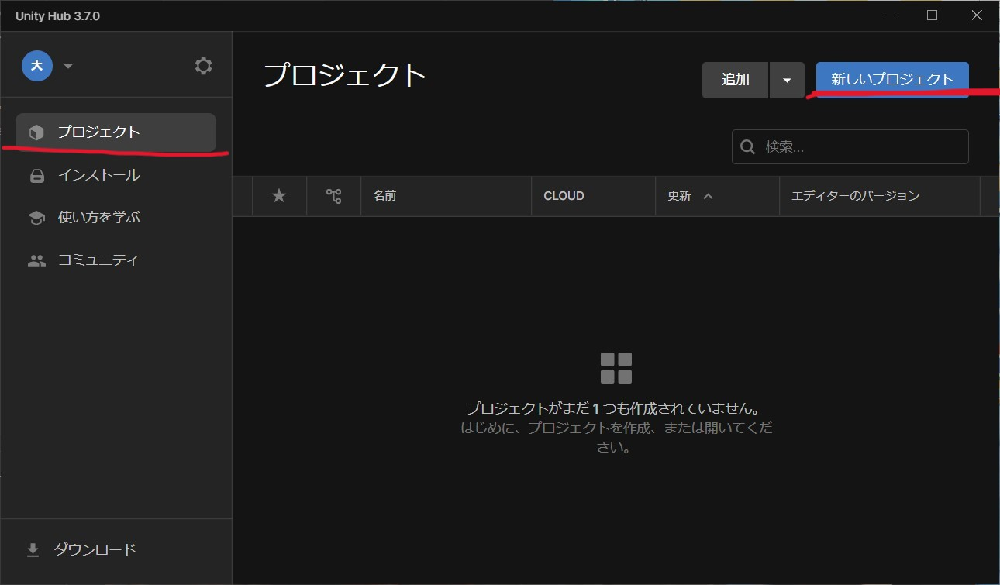

プロジェクトを作成する
プロジェクトの作成方法の解説をします。といってもそこまで話すことはないです。Unityのインストール時点で日本語化されているならばちょちょいのちょいでできます。
1.プロジェクト作成画面
赤で囲ったプロジェクトをクリックして右上の青い新しいプロジェクトボタンををクリックしてください
プロジェクトの作成方法の解説をします。といってもそこまで話すことはないです。Unityのインストール時点で日本語化されているならばちょちょいのちょいでできます。
赤で囲ったプロジェクトをクリックして右上の青い新しいプロジェクトボタンををクリックしてください